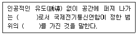
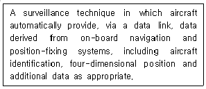
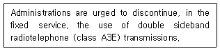
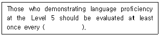
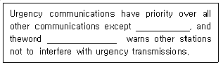
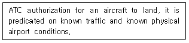
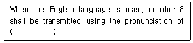
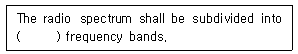
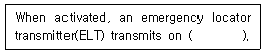

항공무선통신사 (2018-10-06 기출문제)
1과목: 전파법규
1. 항공기국은 해당 무선국에 설치되어 있는 각종 무선설비를 충분히 운용할 수 있는 자격자를 1명 배치하여야 한다. 다음 중 해당자격이 아닌 것은?
- 전파전자통신기사
- 전파전자통신산업기사
- 전파전자통신기능사
- 항공무선통신사
(정답률: 81%)

2. 항공기국이 방위를 측정하고자 하는 경우 어디에 청구하여야 하는가?
- 무선방향탐지국
- 인근 항공기국
- 방송국
- 무선표지국
(정답률: 84%)
3. 다음 중 과학기술정보통신부장관이 정하여 고시하는 교육을 이수한 자에 대하여 해당 검정과목의 시험을 면제할 수 있는 자격종목이 아닌 것은?
- 항공무선통신사
- 해상무선통신사
- 육상무선통신사
- 제3급아마추어무선기사(전신급)
(정답률: 79%)
4. 국제항공고정무선통신망에 속하는 항공고정국에서 취급하는 제1순위 통보에 붙이는 약어는?
- “SS"
- "DD"
- "GG"
- "KK"
(정답률: 81%)
5. 기지국과 육상이동국, 육상국과 이동국, 육상이동국 상호간 및 이동국 상호간의 통신을 중계하기 위하여 설치하는 무선국을 무엇이라 하는가?
- 이동국
- 이동중계국
- 기지국
- 육상국
(정답률: 88%)
6. 기술자격검정에 관하여 부정행위가 있을 경우 과학기술정보통신부장관이 얼마 이내의 기간을 정하여 자격검정을 받지 못하는 하는가?
- 6개월 이상 1년 이내
- 3개월 이상 1년 이내
- 6개월 이상 2년 이내
- 해당 검정 시행일부터 3년간
(정답률: 76%)
7. 다음 중 항공기의 정상운항에 관한 통신의 통보가 아닌 것은?
- 항공기의 운항계획 변경에 관한 통보
- 항공기의 예정 외 착륙에 관한 통보
- 시급히 입수하여야 할 항공기 부분품에 관한 통보
- 항공교통관제에 관한 통보
(정답률: 64%)
8. MF(핵터미터파) 전파의 주파수 범위로 옳은 것은?
- 300 kHz 초과 3,000 kHz 이하
- 3 MHz 초과 30 MHz 이하
- 30 MHz 초과 300 MHz 이하
- 300 MHz 초과 3,000 MHz 이하
(정답률: 74%)
9. 의무항공기국의 예비전원은 항공기의 항행안전을 위하여 필요한 무선설비를 얼마 이상 동작시킬수 있는 성능을 가져야 하는가?
- 1시간 이상
- 30분 이상
- 10분 이상
- 2시간 이상
(정답률: 77%)
10. 다음 중 과태료 200만원 이하의 벌칙 규정에 해당되지 않는 것은?
- 긴급통신에 관한 의무를 이행하지 아니한 경우
- 통신보안교육을 받지 아니한 경우
- 무선국을 신고하지 아니하고 무선국을 운용한 경우
- 안전시설기준에 적합하지 아니한 무선설비를 운용한 경우
(정답률: 56%)
11. 전파를 전방향으로 발사하는 회전식 무선표지업무를 행하는 무선설비는?
- DME(Distance Measurement Equipment)
- VOR(VHF Omnidirectional Radio Range)
- 마아커비콘(Marker Beacon)
- 글라이드패스(Glide Path)
(정답률: 86%)
12. 다음 중 전파형식 ‘A3E'에 대한 설명으로 틀린 것은?
- 주반송파의 변조형식이 진폭변조이고 양측파대이다.
- 주반송파를 변조시키는 신호의 특성이 아날로그 정보를 포함하는 단일채널이다.
- 송신할 정보가 전화이다.
- 4조건 부호로서 각각의 조건이 신호소자를 표시한 것이다.
(정답률: 85%)
13. 「대한민국 헌법」 또는 「대한민국 헌법」에 따라 설치된 국가기관을 폭력으로 파괴할 것을 주장하는 통신을 한 자에 대한 벌칙은?
- 3년 이하의 징역 또는 1,000만원 이하의 벌금
- 1년 이상 15년 이하의 징역
- 5년 이하의 징역 또는 5,000만원 이하의 벌금
- 5년 이상의 징역 또는 금고
(정답률: 76%)
14. 다음 중 각 지방 전파관리소에서 수행하는 업무가 아닌 것은?
- 적합성평가의 변경신고 및 잠정인증
- 무선국의 개설허가 및 변경허가
- 무선국의 검사
- 무선국 폐지·운용휴지의 신고수리
(정답률: 57%)
15. 무선국의 허가유효기간 만료일 도래 시 재허가 신청은 누구에게 해야 하는가?
- 해양수산부장관
- 과학기술정보통신부장관
- 산업통장자원부장관
- 국토교통부장관
(정답률: 88%)
16. 다음 중 시설자의 지위승계를 위하여 과학기술정보통신부장관의 인가를 받아야 하는 경우는?
- 시설자에 대하여 상속이 있는 경우
- 항공기 소유권의 이전에 의하여 운항자가 변경된 경우
- 시설자인 법인이 합병한 경우에 합병 후 존속한 경우
- 항공기의 임대차 계약에 의하여 운항자가 변경된 경우
(정답률: 69%)
17. 다음 중 비상사태가 발생하거나 혼신방지상 필요한 경우 과학기술정보부장관이 취할 수 있는 조치로 틀린 것은?
- 무선종사자 기술자격정지
- 무선국의 변경
- 무선국의 운용제한
- 무선국의 운용정지
(정답률: 89%)
18. 다음 중 ITU의 공용어가 아닌 것은?
- 중국어
- 프랑스어
- 일본어
- 영어
(정답률: 86%)
19. 전파의 법률적 정의에서 괄호 안에 들어갈 단어로 알맞은 것은?

- 전자기, 주파수
- 전자파, 주파수
- 주파수, 전자기
- 주파수, 전자파
(정답률: 87%)
20. 다음 중 무선국이 준수하여야 할 조건으로 틀린 것은?
- 항공기국은 어떠한 목적으로도 해상이동업무의 무선국과 통신할 수 없다.
- 타 무선국에 대하여 유해한 혼신을 야기시켜서는 안된다.
- 구명이동국 이외의 이동국과 이동지구국은 ITU 업무문서를 비치하여야 한다.
- 항공기국은 해상상공에서의 방송업무를 할 수 없다.
(정답률: 82%)
2과목: 기초전파공학
21. 다음 중 파장의 의미로 옳은 것은?
- 전파의 속도를 주파수로 나눈 값으로 1초당 전파가 진동하는 폭
- 주파수를 전파의 속도로 나눈 값으로 1초당 전파가 진동하는 폭
- 전파의 속도를 주파수로 곱한 값으로 10초당 전파의 반복하는 횟수
- 주파수를 전파의 속도로 곱한 값으로 10초당 전파의 반복하는 횟수
(정답률: 61%)
22. SSB통신은 몇 개의 측대파를 사용하는가?
- 1개
- 2개
- 3개
- 4개
(정답률: 53%)
23. 다음 중 항공기용 VHF 통신시스템의 구성요소가 아닌 것은?
- 주파수변환기
- AGC회로
- 안테나동조기
- 완충증폭기
(정답률: 42%)
24. 다음 중 마이크로 계기착륙(MLS)에 대한 설명으로 틀린 것은?
- 활주로의 연장상의 곡선 진입을 할 수 있다.
- 방위각, 고저각, 비행정보, 거리 등을 제공하는 장치로 구성된다.
- ILS(Instrument Landing Syatem)에 비하여 시계가 나쁜 상태에서도 착륙할 수 있다.
- 2 GHz 대의 주파수를 이용한다.
(정답률: 60%)
25. VHF(Very High Frequency)대에서 주파수 변조 방식이 사용되는 이유는?
- 변조가 간단하므로
- 지향성이 좋으므로
- FM 방식 이외에는 마땅한 방법이 없으므로
- 주파수 대역을 넓게 쓸수 있으므로
(정답률: 57%)
26. 다음 중 레이다 주파수밴드별 사용주파수 및 용도를 잘못 연결한 것은?
- S Band : 2.7∼3.5 GHz, 공항감시레이다, 수색레이다
- C Band : 5.25∼5.925 GHz, 기상레이다, 수색레이다
- X Band : 8.5∼10.550 GHz, 공항감시레이다, 선박레이다
- Ka Band : 13.4∼17.7 GHz, 2차레이다, 원거리기상레이다
(정답률: 62%)
27. 다음 중 초단파전방향무선표시(Very High Frequency Ommidirectional Radio Range)의 국식별(Identification)에 대한 설명으로 옳은 것은?
- 매 30초마다 3문자의 국제 Morse Code로 국식별 신호를 3회 이상 발사한다.
- 반드시 음성으로 된 식별음을 발사한다.
- 매 1분마다 3문자의 Morse Code를 송신한다.
- 매 5분마다 3문자의 Morse Code를 송신한다.
(정답률: 60%)
28. 다음 중 계기착륙장치(ILS)의 구성요소와 관계없는 것은?
- 로칼라이저(Localizer)
- 글라이드 패스(Glide Path)
- 마아거 비콘(Marker Beacon)
- 2차 레이다(Radar)
(정답률: 66%)
29. 다음 중 무지향표지시설(NDB)의 신호를 수신하여 항법을 이용하기 위한 장비는?
- 자동방향탐지기(ADF)
- 전방향표지시설(VOR) 수신기
- 계기착륙시설(ILS) 수신기
- 전술항행표지시설(TACAN) 수신기
(정답률: 44%)
30. 항법용 NDB(Non-Directional Radio Beacon)에 사용되는 주파수 범위는?
- 200∼415kHz
- 110.0∼117.95 MHz
- 500∼1,000kHz
- 108.1∼111.95MHz
(정답률: 40%)
31. 다음 중 정밀진입레이다(PAR) 접근 시 제공되는 정보가 아닌 것은?
- 시간
- 고도
- 거리
- 방위
(정답률: 59%)
32. 항공기가 진침로(TH) 090° 비행시, ADF를 이용하여 상대방위를 측정하여 060°를 얻었다. 이 때 항공기의 국(Station)에 대한 진방위각은 얼마인가?
- 180°
- 150°
- 130°
- 110°
(정답률: 69%)
33. 위성통신에서 발생하는 강우감쇄를 보상하는 기법으로 틀린 것은?
- 전송속도를 낮춘다.
- 에러징징 코드율을 높인다.
- 송신기에서 출력레벨을 올린다.
- 낮은 주파수 대역으로 전송한다.
(정답률: 54%)
34. 외부감쇄기 감쇄값 30dB를 통과해서 스팩트림분석기로 신호레벨을 측정하였더니 -12dBm의 신호가 측정되었다. 감쇄되기 전의 원 신호레벨 값은 몇 dBm 인가?
- -12 dBm
- +12 dBm
- -18 dBm
- +18 dBm
(정답률: 61%)
35. 지구주위의 궤도를 도는 위성으로 하여금 마이크로파 통신 시스템의 중계역할을 행하게 하는 통신방식을 무엇이라 하는가?
- FM통신
- 위성통신
- AM통신
- 단측파대통신
(정답률: 68%)
36. 고주파 선로에서 저항, 인덕턴스, 콘덴서 등이 균일하게 분포되는 회로를 무엇이라 하는가?
- 무한장 선로
- 유한장 선로
- 도파선로
- 분포정수회로
(정답률: 61%)
37. ADF의 방향탐지용으로서 야간오차를 경감하는데 사용되는 안테나는?
- 루프(Loop) 안테나
- 슬리브(Sleeve) 안테나
- 애드콕(Adcock) 안테나
- 웨이브(Wave) 안테나
(정답률: 66%)
38. 다음 중 안테나에 대한 설명으로 틀린 것은? (단, 빛의 속도(c)는 3×108m/s 이다.)
- 다이폴안테나는 안테나 이득 측정 시 표준안테나로 많이 사용된다.
- 안테나의 지향성 척도는 빔폭이다.
- 1/4파장 수직안테나를 접지면 안테나라고 한다.
- 150MHz 대의 1/4 파장 수직안테나의 길이는 1m 이다.
(정답률: 46%)
39. 다음 중 직류전력을 교류전력으로 변환하는 기기는?
- Inverter
- Converter
- Rectifier
- Rotary Joint
(정답률: 65%)
40. 다음 중 2개의 금속도체를 일정한 간격으로 서로 마주보게 하여 정전용량을 가지게 한 소자는?
- 건전지
- 코일
- 저항
- 콘덴서
(정답률: 58%)
3과목: 통신보안
41. 다음 중 보안담당관의 임명 및 임무에 관한 사항으로 틀린 것은?
- 보안담당관은 각급 기관에서 임명한다.
- 중앙전파관리소장이 각급 기관의 보안담당관을 임명한다.
- 보안담당관은 자체 보안업무를 관리한다.
- 보안담당관은 비밀소유현황 조사를 한다.
(정답률: 58%)
42. 다음 중 통신보안이 필요한 요인으로 볼 수 없는 것은?
- 북한을 비롯하여 각국의 통신정보 수집능력이 강화되고 있다.
- 전기통신의 고도화에 따라 그 이용도가 날로 증가되고 있다.
- 전기통신은 풍부한 정보의 원천이 되고 있다.
- 통신장비에 의한 무선통신의 도청이 감소되고 있다.
(정답률: 67%)
43. 지리적 여건상 우리나라 무선통신의 보안상 상당히 불리한 조건하에 있는 설정이다. 다음 중 지정학적 고려할 때 통신보안의 취약성과 관련이 가장 적은 것은?
- 북쪽-북한
- 서쪽-중국
- 동쪽-일본
- 남쪽-호주
(정답률: 70%)
44. 통신보안의 취약성 중 제3자의 방해를 당할 우려가 가장 높은 통신수단으로 짝지어진 것은?(오류 신고가 접수된 문제입니다. 반드시 정답과 해설을 확인하시기 바랍니다.)
- 전령통신-시호통신
- 시호통신-음향통신
- 음향통신-전기통신
- 전기통신-전령통신
(정답률: 37%)
45. 각급 기관의 장은 비밀소유현황을 조사하여 국가정보원장에게 연간 몇 회 통보하여야 하는가?
- 1회
- 2회
- 4회
- 6회
(정답률: 54%)
46. 다음 중 통신내용 분석에 해당되는 것은?
- 하나하나의 통신내용을 종합적으로 분석하여 중요한 통신정보를 수집한다.
- 통신망의 구성현황을 파악하여 그 기관의 행동 동태를 분석한다.
- 암호를 해독하여 비밀내용을 알아낸다.
- 통신제원을 분석하여 탐지활동을 원만히 지원한다.
(정답률: 65%)
47. 다음 중 도청을 방지하려는 조치로 볼 수 있는 것은?
- 통신 제원을 장기간 유지한다.
- 통신사 개인특성을 노출한다.
- 보안장비를 설치 운용한다.
- 불필요한 전파를 계속 발사한다.
(정답률: 68%)
48. 다음 중 통신망 구축 시 보안대책으로 틀린 것은?
- 통신망 관리책임자의 보고체계 다원화
- 통신장비 수급관리 시 보안대책 수립
- 보안자재 및 보안장비의 설치운용
- 통신망 신·증설 시 통신보안대책 수립 의무화
(정답률: 69%)
49. 기만통신을 당하고 있다고 느낄 때의 조치로 옳은 것은?
- 송신출력을 줄인다.
- 통신속도를 빠르게 한다.
- 통신을 중단한다.
- 송신출력을 높인다.
(정답률: 69%)
50. 다음 중 통신보안용 암호자재의 제작에 관한 사항으로 틀린 것은?
- 자재의 제작은 자체 제작시설을 이용함을 원칙으로 한다.
- 자재의 실수요 부수 외 예비용은 3부를 초과하여 제작할 수 없다.
- 보안담당관은 자체제작과정을 감독하고 조판부분을 회수 보관하여야 한다.
- 자재의 표지 및 내용문 상단 중앙에는 “대외비” 표시를 하여야 한다.
(정답률: 48%)
4과목: 영어
51. 항공무선 교신에서 나의 송신에 대한 상대국의 수신 상태를 알려고 질문하는 용어는?
- Adivice me the receiving level.
- Report your receiving condition.
- What is your listening status?
- How do you read me?
(정답률: 80%)
52. 다음 설명이 나타내는 용어는 무엇인가?

- ADS
- ATIS
- SSR
- TIS
(정답률: 67%)
53. 다음 문장을 올바르게 해석한 것은?

- 주관청은 고정업무에서 양측파대 무선전화의 전송중지가 촉구된다.
- 주관청은 고정업무에서 단측파대 무선전신의 전송을 중지한다.
- 주관청은 고정업무에서 양측파대 무선전화의 전송이 장려된다.
- 주관청은 고정업무에서 단측파대 무선전화의 전송이 장려된다.
(정답률: 73%)
54. 항공무선통신에서 숫자를 나타내는 표현으로 적합하지 않은 것은?
- Numbers are used in almost every radio call
- "10" should be pronounced "ten"
- "11,000" is pronounced "one one thousand"
- All numbers are spoken by pronouncing each digit separately except for whole hundreds and thousands
(정답률: 72%)
55. 다음 문장의 괄호 안에 해당되는 기간은?

- Three years
- Four years
- Five years
- Six years
(정답률: 66%)
56. When an error has been made in transmission, which word should be spoken?
- Clear
- Correction
- Advice
- Say Again
(정답률: 74%)
57. 다음 문장의 밑줄 친 부분에 들어갈 단어를 순서대로 나열한 것은?

- distress, PAN PAN
- distress, MAYDAY
- emergency, PAN PAN
- emergency, MAYDAY
(정답률: 56%)
58. 항공통신의 송신내용 중에 ‘I READ BACK' 이란 용어의 뜻은?
- Wait and I will call you
- Annual the previously transmitted clearance
- Permission for proposed action granted
- Repeat my message back to me
(정답률: 79%)
59. 다음 문장은 어떤 용어에 대한 설명인가?

- Cleared For Take-off
- Circle To Runway
- Cleared To Land
- Cleared To TAXI
(정답률: 78%)
60. 다음 중 영문통화표의 연결이 옳지 않은 것은?(오류 신고가 접수된 문제입니다. 반드시 정답과 해설을 확인하시기 바랍니다.)
- I : India
- V : Victory
- 9 : Novenine
- 소수점 : Decimal
(정답률: 75%)
61. 다음 괄호 안에 알맞은 발음은?

- AIT
- I-IT
- E-IT
- EI-TO
(정답률: 61%)
62. What is a definition of "OVER" in aviation radio phrase?
- My transmission is ended.
- My transmission is ended and I expect a response from you.
- Let me know that you have received and understand this message.
- This conversation is ended and no response is expected.
(정답률: 65%)
63. 항공통신의 송신내용 끝에 사용하는 용어로서 “교신은 끝났고 응답을 기대하지 않음”의 뜻을 갖는 것은?
- Out
- Over
- End
- Completed
(정답률: 74%)
64. 다음 중 “ROGER"의 의미에 대한 설명으로 맞는 것은?
- I've received all of your transmission.
- Can be used to answer a question requiring yes or no?
- Ready to take off.
- Ready to touchdown.
(정답률: 83%)
65. 다음 중 International phonetic alphabet 의 발음이 틀린 것은?
- A : AL FAH
- B : BRAI BOU
- E : ECK OH
- G : GOLF
(정답률: 74%)
66. How can you read 4,500 feet in ATC?
- "FOUR FIVE ZERO"
- "FOUR POINT FIVE"
- "FOUR - FIVE HUNDRED"
- "FOUR THOUSAND FIVE HUNDRED"
(정답률: 68%)
67. Who is most responsible for collision avoidance in an alert area?
- All pilots
- Air Traffic Control
- the controlling agency
- Flight operations manager
(정답률: 65%)
68. 다음 문장의 괄호 안에 알맞은 것은?

- Three
- Six
- Nine
- Ten
(정답률: 59%)
69. What is the meaning when a steady red light signal is directed from the control tower to someone in the landing area?
- Stop
- Permission to cross landing area or to move onto taxiway
- Vacate maneuvering area in accordance with local instructions
- Move off the landing area or taxiway and watch out for aircraft
(정답률: 70%)
70. 다음 괄호 안에 들어갈 가장 적절한 것은 무엇인가?

- 118.0 and 118.8 MHz
- 121.5 and 243.0 MHz
- 123.0 and 119.0 MHz
- 135.0 and 247.0 MHz
(정답률: 69%)